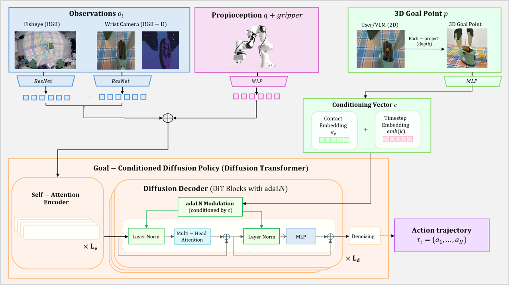
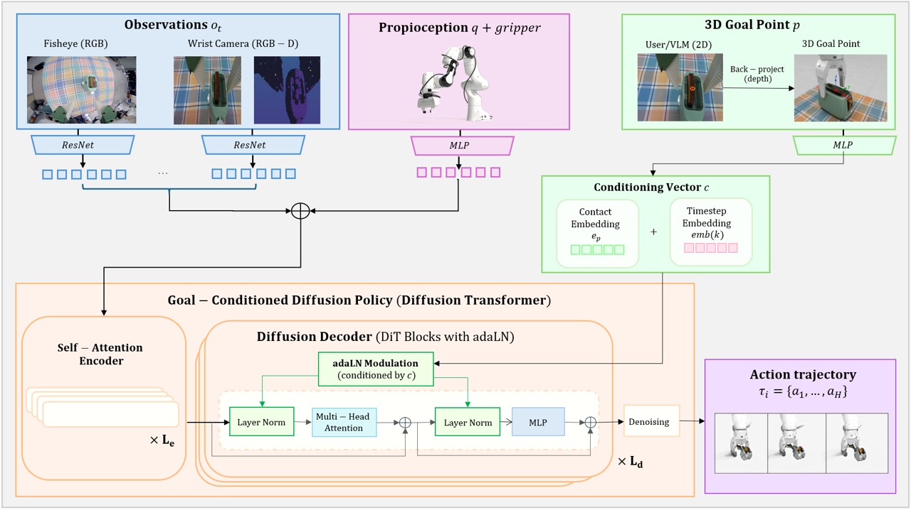

Interactive 3D Goal-Conditioned Diffusion Primitives for Robot Control
Mondragon Unibertsitatea
An interactive interface for selecting 3D target points and turning them into reusable robot skills.
Mondragon Unibertsitatea
An interactive interface for selecting 3D target points and turning them into reusable robot skills.
Effective robot manipulation requires translating high-level intent into precise physical interaction. Despite language being the common approach to task specification in Vision-Language-Action models; the lack of a 3D geometric grounding of those commands makes the policies hardly steerable. In this work, we augment the language semantic commanding with a 3D geometric grounding, providing a natural interface for steerable and reusable manipulation skills. We introduce Point2Skill, a framework for specifying reusable manipulation skills through 3D target points. We instantiate a library of primitives, including Pick, Place, Insert, Open, and Close, each represented as a 3D point goal-conditioned diffusion policies. Then, we explore the interaction and concatenation of these primitives to solve complex long horizon tasks, both through an interactive click-based interface in which a human can design the robot task or by querying the task description and pointing to a Vision-Language Model (VLM). This point-based parameterization abstracts skills away from object identity, enabling a single primitive to generalize across object categories and novel instances. By separating task-level reasoning from motion generation, the proposed framework supports reuse and composition of manipulation skills. To validate our hypothesis, we perform extensive experiments to evaluate the usefulness of point-conditioned primitives and perform a set of ablations to study the impact of different goal-conditionings when learning the skill primitives.
A human or VLM selects the target interaction point in the scene.
The 3D point modulates a Diffusion Transformer policy through adaLN.
The robot executes Pick, Place, Insert, Open, or Close.
Goal-conditioned primitives are sequenced into long-horizon tasks.

Point2Skill learns a reusable library of goal-conditioned manipulation primitives.
Grasp the selected object from a 3D target point.
Move the object to a goal-specified target region.
Align and insert objects into constrained receptacles.
Interact with articulated objects through goal-conditioned contact.
Each primitive is implemented as a goal-conditioned Diffusion Transformer. Multi-view observations, proprioception, and a 3D goal point are encoded and used to predict an action trajectory.

Fisheye RGB and wrist RGB-D images encode scene context and local geometry.
A user or VLM-selected point specifies where the robot should interact.
The goal embedding modulates the Diffusion Transformer denoising process.
The policy outputs a sequence of robot actions for the selected primitive.
Repeated pick/place primitives collect requested items into a basket.
A VLM sequences reusable primitives into a multi-step kitchen task.
We compare no goal, object labels, 2D points, 3D concatenation, and Point2Skill.
Point2Skill is evaluated across Pick, Place, Insert, Open, and Close.
Reusable primitives are composed into long-horizon behaviors.
@inproceedings{atxa2026point2skill,
title={Point2Skill: Interactive 3D Goal-Conditioned Diffusion Primitives for Robot Control},
author={Atxa Galdos, Alaitz and ...},
booktitle={Conference on Robot Learning},
year={2026}
}